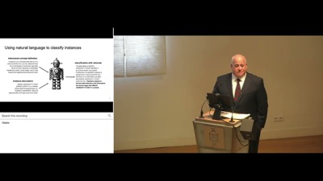
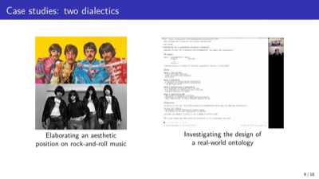
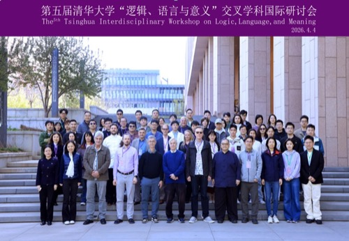
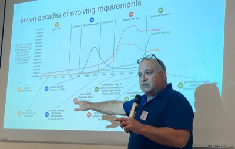
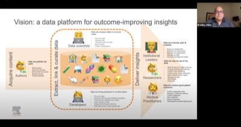
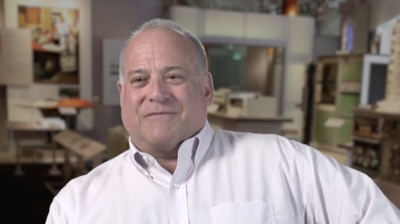

Researcher, Intelligent Data Engineering Lab (INDE Lab), Informatics Institute, University of Amsterdam
Email · CV · Google Scholar · ORCID · PhilPapers · GitHub · LinkedIn
I work on knowledge engineering in the era of large language models. My research asks a practical question: can domain experts build and maintain knowledge-based systems directly, in natural language, without depending on specialist knowledge engineers as intermediaries? I'm a researcher in the Intelligent Data Engineering Lab (INDE Lab) at the University of Amsterdam, where I completed my PhD in 2026 after four decades in industry.
My work addresses the implementation problem in knowledge engineering: translating expert knowledge expressed in natural language into the formal representations that organizations and communities adopt for automated reasoning.
I've shown that large language models can use natural-language definitions of concepts and roles to evaluate knowledge graphs, articulate rationales that surface factual and metalinguistic errors, and self-report bilateral doxastic states that enable sound and complete paraconsistent reasoning even when their beliefs are inconsistent.
Currently working on:
- structured human–LLM dialogue protocols for collaborative knowledge base construction
- bilateral modal logics for reasoning about LLM beliefs
- methodologies for probing LLM endorsement of material inferential rules
I began my career as a Senior Research Programmer at Carnegie Mellon University's Robotics Institute. In 1984, I became one of the first knowledge engineers of the expert-systems era at Inference Corporation, where I helped build the ART expert system development environment. I went on to found and serve as CTO of three startups (Limbex, TriVida, and Siderean) and as Chief Architect at Elsevier. After forty years in industry, I returned to an academic research role at the Intelligent Data Engineering Lab (INDE Lab) at the University of Amsterdam. I hold a PhD in Computer Science from the University of Amsterdam (2026) and a BS in Applied Mathematics/Computer Science from Carnegie Mellon University (1982).
- Knowledge engineering with large language models — interview, Weaviate Podcast #139, 1 June 2026. Video
-

PhD thesis defense layman's talk — University of Amsterdam, 30 April 2026. Video · Slides -

Elenchus: Generating Knowledge Bases from Prover–Skeptic Dialogues — invited talk, Commonsense AI group, Vrije Universiteit Amsterdam, 29 April 2026. Slides -

BBL: A Bilateral Modal Logic for LLM Factuality Evaluation — TLLM 2026, Tsinghua University, 3 April 2026. Slides -

A Brief History of Knowledge Engineering: A Practitioner’s Perspective — invited talk, Dagstuhl Seminar, 12 September 2022. Dagstuhl Reports -

Data science in practice at Elsevier — Harvard Data Science Initiative Industry Seminar, 15 September 2020. Video -

Oral History of Brad Allen — Computer History Museum, 16 May 2018. Video · Transcript
- Neurosymbolic Knowledge Engineering with Natural Language. Bradley P. Allen. PhD thesis, University of Amsterdam, 2026.
- Conceptual Engineering Using Large Language Models. Bradley P. Allen. In Vincent C. Müller, Leonard Dung, Guido Löhr, and Aliya Rumana, editors, Philosophy of Artificial Intelligence, Synthese Library, vol. 533. Springer, Cham, 2026.
- Elenchus: Generating Knowledge Bases from Prover–Skeptic Dialogues. Bradley P. Allen. arXiv:2603.06974, 2026.
- Sound and Complete Neurosymbolic Reasoning with LLM-Grounded Interpretations. Bradley P. Allen, Prateek Chhikara, Thomas Macaulay Ferguson, Filip Ilievski, and Paul Groth. Proceedings of the 19th International Conference on Neurosymbolic Learning and Reasoning (NeSy 2025), PMLR 284:392–419, 2025.
- A Benchmark for the Detection of Metalinguistic Disagreements between LLMs and Knowledge Graphs. Bradley P. Allen and Paul Groth. Special Session on Harmonising Generative AI and Semantic Web Technologies (HGAIS 2024), CEUR Workshop Proceedings 3953, 2025.
- Large Language Models and the Relative Roles of Formal and Natural Language in Formalization. Bradley P. Allen. Preprint, 2025.
- Carnap's Robot Redux: LLMs, Intensional Semantics, and the Implementation Problem in Conceptual Engineering. Bradley P. Allen. Preprint, 2024.
- SHROOM-INDElab at SemEval-2024 Task 6: Zero- and Few-Shot LLM-Based Classification for Hallucination Detection. Bradley P. Allen, Fina Polat, and Paul Groth. Proceedings of the 18th International Workshop on Semantic Evaluation (SemEval-2024), ACL, 2024.
- Evaluating Class Membership Relations in Knowledge Graphs using Large Language Models. Bradley P. Allen and Paul Groth. The Semantic Web: ESWC 2024 Satellite Events, LNCS 15344, Springer, 2025.
- Standardizing Knowledge Engineering Practices with a Reference Architecture. Bradley P. Allen and Filip Ilievski. Transactions on Graph Data and Knowledge, 2(1):5:1–5:23, 2024.
- Identifying and Consolidating Knowledge Engineering Requirements. Bradley P. Allen, Filip Ilievski, and Saurav Joshi. arXiv:2306.15124, 2023.
- Knowledge Engineering using Large Language Models. Bradley P. Allen, Lise Stork, and Paul Groth. Transactions on Graph Data and Knowledge, 1(1):3:1–3:19, 2023.
- Knowledge Engineering with Language Models and Neural Methods. Elena Simperl, Paul Groth, Steffen Staab, Marta Sabou, Eva Blomqvist, and Bradley P. Allen. Dagstuhl Reports, 12(9):93–96, 2023.
- A Brief History of Knowledge Engineering: A Practitioner’s Perspective. Bradley P. Allen. Dagstuhl Reports, 12(9):65–72, 2023.
- Case-Based Reasoning: Business Applications. Bradley P. Allen. Communications of the ACM, 37(3):40–43, 1994.
- A Knowledge-Based Environment for the Development of Software Parts Composition Systems. Bradley P. Allen and S. Daniel Lee. 11th International Conference on Software Engineering (ICSE), pages 104–112, 1989.
- Job-Shop Scheduling: An Investigation in Constraint-Directed Reasoning. Mark S. Fox, Bradley P. Allen, and Gary Strohm. AAAI, pages 155–158, 1982.
1,340 citations · h-index 15 · i10-index 16 (Google Scholar, June 2026).
Full publication list on Google Scholar →
Copyright © 2026 Bradley P. Allen.